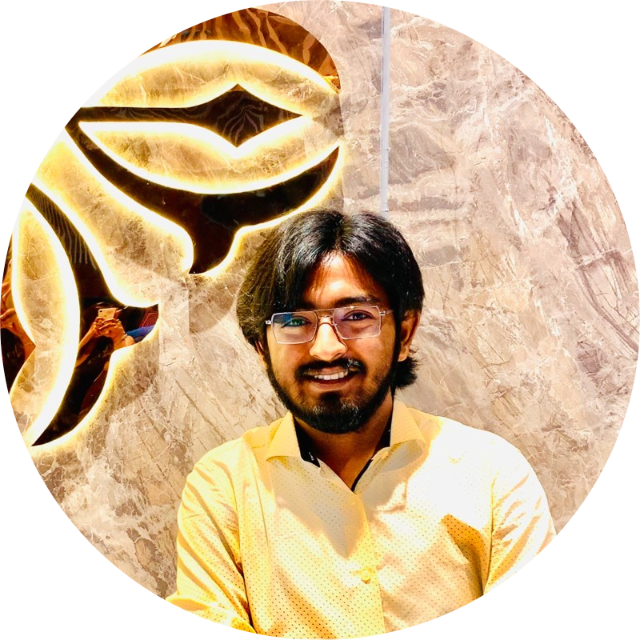
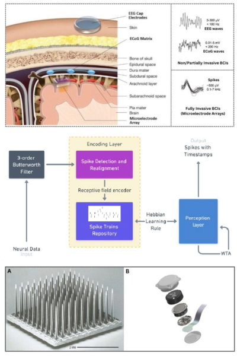
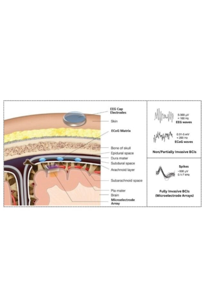
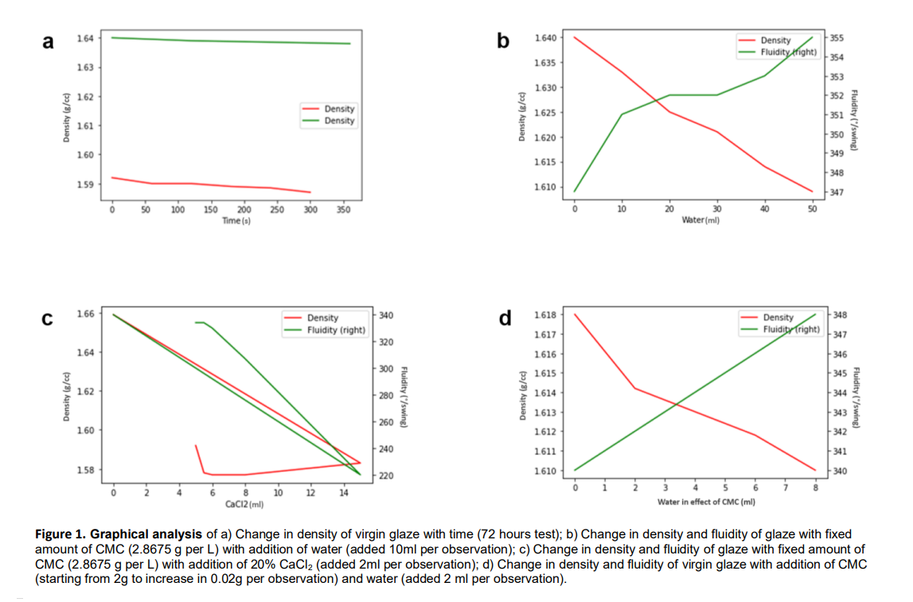

|
Soujatya Sarkar I'm a Guest Researcher at Bose Institute, Kolkata. I am presently advised by Prof. Subhrangshu Chatterjee and I work on 3D molecular structure prediction from protein expressions. I have completed my BTech in Chemical Technology from University of Calcutta in July '23 . Presently, I am pursuing a BSc (Hons) in Data Science and Artificial Intelligence from IIT Guwahati to be completed by Aug '27 and a MTech in Polymer Science and Technology from University of Calcutta to be completed by July '25. Email / CV / Google Scholar / LinkedIn / Github |
 |
ResearchMy research pursuits encompass a broad array of fields, including brain-computer interfaces, human-robot interaction, neuromorphic computing, bioinformatics, psychoinformatics, computer vision, natural language processing, robotics, chemoinformatics, and all sorts of applications of machine learning. |
|


|
Advanced spike sorting approaches in implantable VLSI wireless brain computer interfaces: a survey
Soujatya Sarkar arXiv Preprint, 2023 arXiv Due to severe health hazards arising from skull incisions required for wired BCI/BMIs, scientists are focusing on developing VLSI wireless BCI implants using biomaterials. However, significant challenges, like power efficiency and implant size, persist in creating reliable and efficient wireless BCI implants. With advanced spike sorting techniques, VLSI wireless BCI implants can function within the power and size constraints while maintaining neural spike classification accuracy. This study explores advanced spike sorting techniques to overcome these hurdles and enable VLSI wireless BCI/BMI implants to transmit data efficiently and achieve high accuracy. |
|

|
Statistical Prediction of the amount of CMC and water required to adjust the parameters of Brown Glaze
Soujatya Sarkar, Sudip Kumar Das 108th Indian Science Congress, 2023 (Oral Presentation, Conference Abstract) figshare Ceramic glaze is an impermeable coating of a vitreous substance fused to a ceramic-ware vessel by firing and is mainly used to colour, decorate and waterproof the item. The present study will mainly focus on the prediction of a scale of addition of the additives (only the binder, i.e., carboxy-methyl-cellulose and water) to adjust the parameters of the Brown Silica Glaze to the production standards, and thus will also improve the quality of the glaze by discontinuing the use of flocculating and deflocculating agents, like, Calcium Chloride (20% solution) and Sodium Hexametaphosphate, which decreases the quality of the glaze. This study has been conducted in partnership with Aditya Birla Insulators, Ltd. using their commercial Brown Silica Glaze for our experimentation purposes. |
Miscellaneous |


|
2023 © Soujatya Sarkar | Last updated: October 2023 | Template by Jon Barron. |